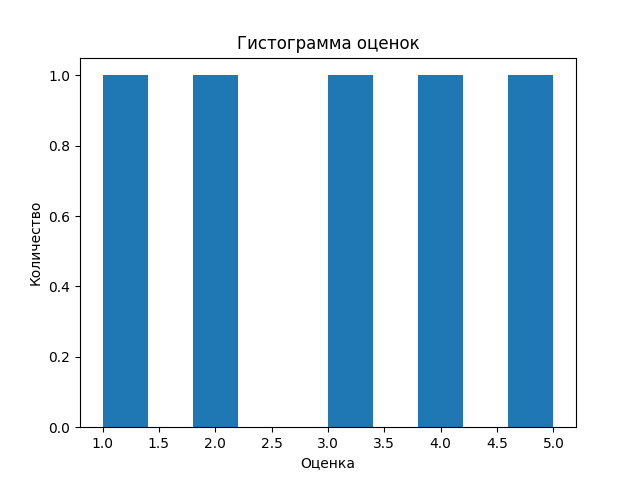
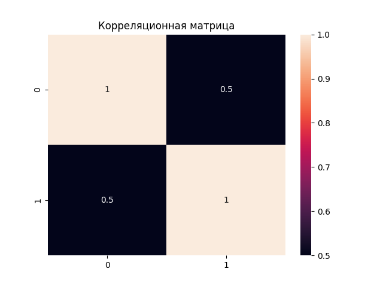
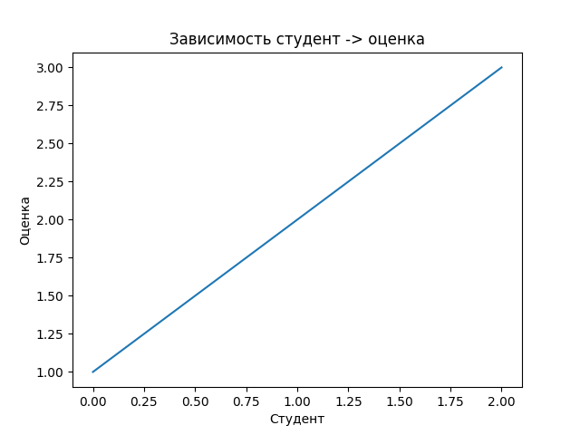

Отчет по лабораторной работе №2
Численные вычисления и анализ данных с использованием NumPy
Выполнил: Зекин В.К., P3121 GitHub Pages: https://n3sostr3l.github.io/lab2
1. Описание задачи
Цель работы — освоить базовые возможности библиотеки NumPy для численных вычислений и анализа данных, а также научиться визуализировать результаты с помощью Matplotlib и Seaborn.
Необходимо реализовать набор функций, выполняющих:
- создание и преобразование массивов (
create_vector,create_matrix,reshape_vector,transpose_matrix); - векторные операции (
vector_add,scalar_multiply,elementwise_multiply,dot_product); - матричные операции (
matrix_multiply,matrix_determinant,matrix_inverse,solve_linear_system); - статистический анализ (
load_dataset,statistical_analysis,normalize_data); - визуализацию данных (
plot_histogram,plot_heatmap,plot_line).
Все функции должны соответствовать стандартам PEP-8, содержать аннотации типов (PEP-484) и докстринги (PEP-257). Корректность работы проверяется с помощью модуля pytest (файл test.py).
2. Реализация
2.1. Используемые инструменты
- NumPy — для операций с многомерными массивами, линейной алгебры и статистики.
- Pandas — для загрузки данных из CSV.
- Matplotlib — для построения графиков.
- Seaborn — для визуализации корреляционных матриц.
- Pytest — для автоматического тестирования.
2.2. Основные функции и их реализация
Создание и обработка массивов:
- create_vector — np.arange(10)
- create_matrix — np.random.rand(5,5)
- reshape_vector — vec.reshape(2,5)
- transpose_matrix — mat.T
Векторные операции:
- vector_add — поэлементное сложение (a + b)
- scalar_multiply — умножение на скаляр (scalar * vec)
- elementwise_multiply — поэлементное умножение (a * b)
- dot_product — скалярное произведение (np.dot(a, b))
Матричные операции:
- matrix_multiply — умножение матриц (a @ b)
- matrix_determinant — определитель (np.linalg.det(a))
- matrix_inverse — обратная матрица (np.linalg.inv(a))
- solve_linear_system — решение СЛАУ (np.linalg.solve(a, b))
Статистический анализ:
- load_dataset — загрузка CSV через pd.read_csv(path).to_numpy()
- statistical_analysis — вычисление mean, median, std, min, max, процентилей с помощью соответствующих функций NumPy.
- normalize_data — Min-Max нормализация: (data - min) / (max - min)
Визуализация:
- plot_histogram — plt.hist(data), подписи осей, заголовок, сохранение.
- plot_heatmap — sns.heatmap(matrix, annot=True, fmt=".2f", cmap="coolwarm")
- plot_line — plt.plot(x, y, marker='o')
Пример одной из функций с аннотациями и докстрингом:
def normalize_data(data: np.ndarray) -> np.ndarray:
"""
Min-Max нормализация массива в диапазон [0, 1].
Формула: (x - min) / (max - min).
Args:
data (numpy.ndarray): Входной массив.
Returns:
numpy.ndarray: Нормализованный массив.
"""
return (data - np.min(data)) / (np.max(data) - np.min(data))
3. Трудности и их решение
3.1. Неправильная передача аргументов в plot_line
При первоначальной реализации в функции plot_line использовалась запись plt.plot(x, data=y), что приводило к некорректному отображению графика, так как параметр data не является координатой Y. После изучения документации Matplotlib вызов был исправлен на стандартный plt.plot(x, y).
3.2. Наложение цветовой шкалы от тепловой карты
При последовательном вызове plot_heatmap и plot_line цветовая шкала (colorbar), добавляемая sns.heatmap, оставалась на фигуре и появлялась на следующем графике. Это происходило из-за использования plt.cla() (очистка только осей). Решение — заменить на plt.clf(), которая полностью очищает всю фигуру перед построением нового графика.
3.3. Отсутствие папки для сохранения изображений
При первом запуске программы папка plots не существовала, что вызывало ошибку при вызове plt.savefig. Чтобы избежать этого, в начало каждой функции визуализации добавлена проверка и создание папки:
import os
os.makedirs("plots", exist_ok=True)
3.4. Аннотация типов для скаляра
В функции scalar_multiply второй аргумент может быть как целым, так и вещественным числом. Для корректной аннотации использован Union[float, int] из модуля typing.
4. Тестирование
Для проверки корректности всех функций использовался файл test.py, содержащий тесты pytest. Тесты охватывают:
-
создание массивов правильной формы;
-
математические операции;
-
матричные операции;
-
статистические показатели;
-
нормализацию;
-
загрузку данных;
-
визуализацию (проверка, что функции выполняются без ошибок).
-
Команда для запуска тестов:
pytest -v test.py
Результат:
=========================================================== test session starts ===========================================================
platform linux -- Python 3.14.2, pytest-9.0.2, pluggy-1.6.0
rootdir: /home/omewa/Projects/python/lab2
collected 17 items
test.py ................. [100%]
=========================================================== 17 passed in 2.68s ============================================================
5. Примеры визуализации
5.1. Гистограмма распределения оценок

5.2. Корреляционная матрица предметов

5.3. Зависимость оценки от номера студента

6. Выводы
В ходе выполнения лабораторной работы были освоены:
-
основы работы с библиотекой NumPy: создание массивов, индексация, изменение формы, векторизованные вычисления;
-
применение линейной алгебры для решения матричных уравнений;
-
методы статистического анализа данных;
-
визуализация с помощью Matplotlib и Seaborn;
-
написание кода в соответствии с PEP-8, аннотирование типов и документирование функций;
-
использование модульного тестирования для проверки корректности реализации.
-
Все функции реализованы в полном объёме и успешно проходят тесты. Код доступен в репозитории по указанной выше ссылке.
Код
"""
Лабораторная работа: Численные вычисления и анализ данных с использованием NumPy.
"""
import os
import numpy as np
import pandas as pd
import matplotlib.pyplot as plt
import seaborn as sns
from typing import Union, Dict
# ============================================================
# 1. СОЗДАНИЕ И ОБРАБОТКА МАССИВОВ
# ============================================================
def create_vector() -> np.ndarray:
"""
Создать массив от 0 до 9.
Returns:
numpy.ndarray: Массив чисел от 0 до 9 включительно.
"""
return np.arange(10)
def create_matrix() -> np.ndarray:
"""
Создать матрицу 5x5 со случайными числами [0,1].
Returns:
numpy.ndarray: Матрица 5x5 со случайными значениями от 0 до 1.
"""
return np.random.rand(5, 5)
def reshape_vector(vec: np.ndarray) -> np.ndarray:
"""
Преобразовать вектор формы (10,) в матрицу (2,5).
Args:
vec (numpy.ndarray): Входной массив формы (10,).
Returns:
numpy.ndarray: Преобразованный массив формы (2, 5).
"""
return vec.reshape(2, 5)
def transpose_matrix(mat: np.ndarray) -> np.ndarray:
"""
Транспонирование матрицы.
Args:
mat (numpy.ndarray): Входная матрица.
Returns:
numpy.ndarray: Транспонированная матрица.
"""
return mat.T
# ============================================================
# 2. ВЕКТОРНЫЕ ОПЕРАЦИИ
# ============================================================
def vector_add(a: np.ndarray, b: np.ndarray) -> np.ndarray:
"""
Поэлементное сложение двух векторов одинаковой длины.
Args:
a (numpy.ndarray): Первый вектор.
b (numpy.ndarray): Второй вектор.
Returns:
numpy.ndarray: Результат поэлементного сложения.
"""
return a + b
def scalar_multiply(vec: np.ndarray, scalar: Union[float, int]) -> np.ndarray:
"""
Умножение вектора на скаляр.
Args:
vec (numpy.ndarray): Входной вектор.
scalar (float|int): Число для умножения.
Returns:
numpy.ndarray: Результат умножения вектора на скаляр.
"""
return scalar * vec
def elementwise_multiply(a: np.ndarray, b: np.ndarray) -> np.ndarray:
"""
Поэлементное умножение двух массивов одинаковой формы.
Args:
a (numpy.ndarray): Первый массив.
b (numpy.ndarray): Второй массив.
Returns:
numpy.ndarray: Результат поэлементного умножения.
"""
return a * b
def dot_product(a: np.ndarray, b: np.ndarray) -> float:
"""
Вычисление скалярного произведения двух векторов.
Args:
a (numpy.ndarray): Первый вектор.
b (numpy.ndarray): Второй вектор.
Returns:
float: Скалярное произведение.
"""
return np.dot(a, b)
# ============================================================
# 3. МАТРИЧНЫЕ ОПЕРАЦИИ
# ============================================================
def matrix_multiply(a: np.ndarray, b: np.ndarray) -> np.ndarray:
"""
Умножение двух матриц.
Args:
a (numpy.ndarray): Первая матрица.
b (numpy.ndarray): Вторая матрица.
Returns:
numpy.ndarray: Результат умножения матриц.
"""
return a @ b
def matrix_determinant(a: np.ndarray) -> float:
"""
Вычисление определителя квадратной матрицы.
Args:
a (numpy.ndarray): Квадратная матрица.
Returns:
float: Определитель матрицы.
"""
return np.linalg.det(a)
def matrix_inverse(a: np.ndarray) -> np.ndarray:
"""
Вычисление обратной матрицы.
Args:
a (numpy.ndarray): Квадратная матрица.
Returns:
numpy.ndarray: Обратная матрица.
"""
return np.linalg.inv(a)
def solve_linear_system(a: np.ndarray, b: np.ndarray) -> np.ndarray:
"""
Решение системы линейных уравнений Ax = b.
Args:
a (numpy.ndarray): Матрица коэффициентов A.
b (numpy.ndarray): Вектор свободных членов b.
Returns:
numpy.ndarray: Решение системы x.
"""
return np.linalg.solve(a, b)
# ============================================================
# 4. СТАТИСТИЧЕСКИЙ АНАЛИЗ
# ============================================================
def load_dataset(path: str = "data/students_scores.csv") -> np.ndarray:
"""
Загрузка данных из CSV-файла в массив NumPy.
Args:
path (str): Путь к CSV-файлу.
Returns:
numpy.ndarray: Загруженные данные.
"""
return pd.read_csv(path).to_numpy()
def statistical_analysis(data: np.ndarray) -> Dict[str, float]:
"""
Вычисление основных статистических показателей для одномерного массива.
Args:
data (numpy.ndarray): Одномерный массив данных.
Returns:
dict: Словарь со статистическими показателями:
- mean: среднее арифметическое
- median: медиана
- std: стандартное отклонение
- min: минимум
- max: максимум
- 25-perc: 25-й перцентиль
- 75-perc: 75-й перцентиль
"""
return {
"mean": np.mean(data),
"median": np.median(data),
"std": np.std(data),
"min": np.min(data),
"max": np.max(data),
"25-perc": np.percentile(data, 25),
"75-perc": np.percentile(data, 75)
}
def normalize_data(data: np.ndarray) -> np.ndarray:
"""
Min-Max нормализация массива в диапазон [0, 1].
Формула: (x - min) / (max - min).
Args:
data (numpy.ndarray): Входной массив.
Returns:
numpy.ndarray: Нормализованный массив.
"""
return (data - np.min(data)) / (np.max(data) - np.min(data))
# ============================================================
# 5. ВИЗУАЛИЗАЦИЯ
# ============================================================
def plot_histogram(data: np.ndarray) -> None:
"""
Построение гистограммы распределения оценок.
Args:
data (numpy.ndarray): Одномерный массив оценок.
"""
plt.clf()
plt.hist(data, bins='auto', edgecolor='black')
plt.xlabel("Оценка")
plt.ylabel("Количество")
plt.title("Гистограмма оценок")
plt.savefig("plots/hist.png")
plt.clf()
def plot_heatmap(matrix: np.ndarray) -> None:
"""
Построение тепловой карты корреляционной матрицы.
Args:
matrix (numpy.ndarray): Квадратная матрица корреляций.
"""
plt.clf()
sns.heatmap(matrix, annot=True, fmt=".2f", cmap="coolwarm")
plt.title("Корреляционная матрица")
plt.savefig("plots/hmap.png")
plt.clf()
def plot_line(x: np.ndarray, y: np.ndarray) -> None:
"""
Построение линейного графика зависимости оценок от номеров студентов.
Args:
x (numpy.ndarray): Номера студентов.
y (numpy.ndarray): Оценки студентов.
"""
plt.clf()
plt.plot(x, y, marker='o', linestyle='-')
plt.title("Зависимость студент -> оценка")
plt.xlabel("Студент")
plt.ylabel("Оценка")
plt.savefig("plots/line.png")
plt.clf()
if __name__ == "__main__":
print("Запустите python -m pytest test.py -v для проверки лабораторной работы.")